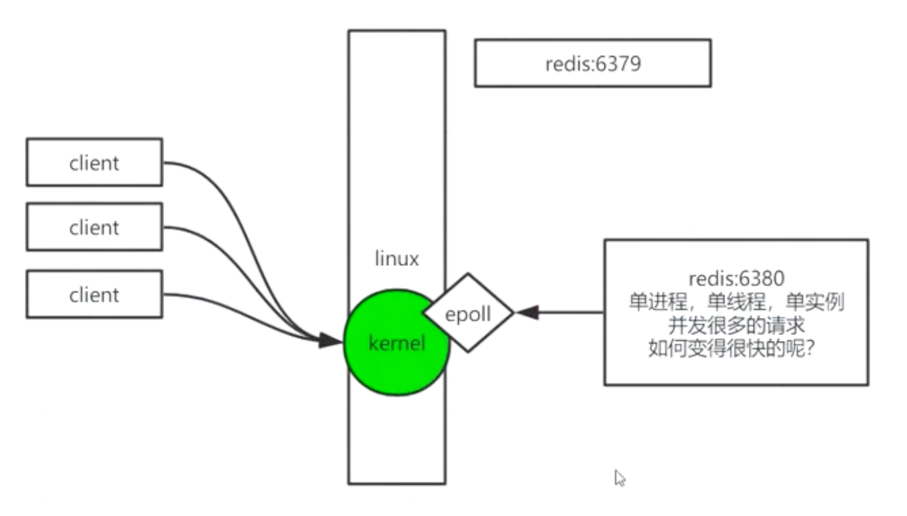
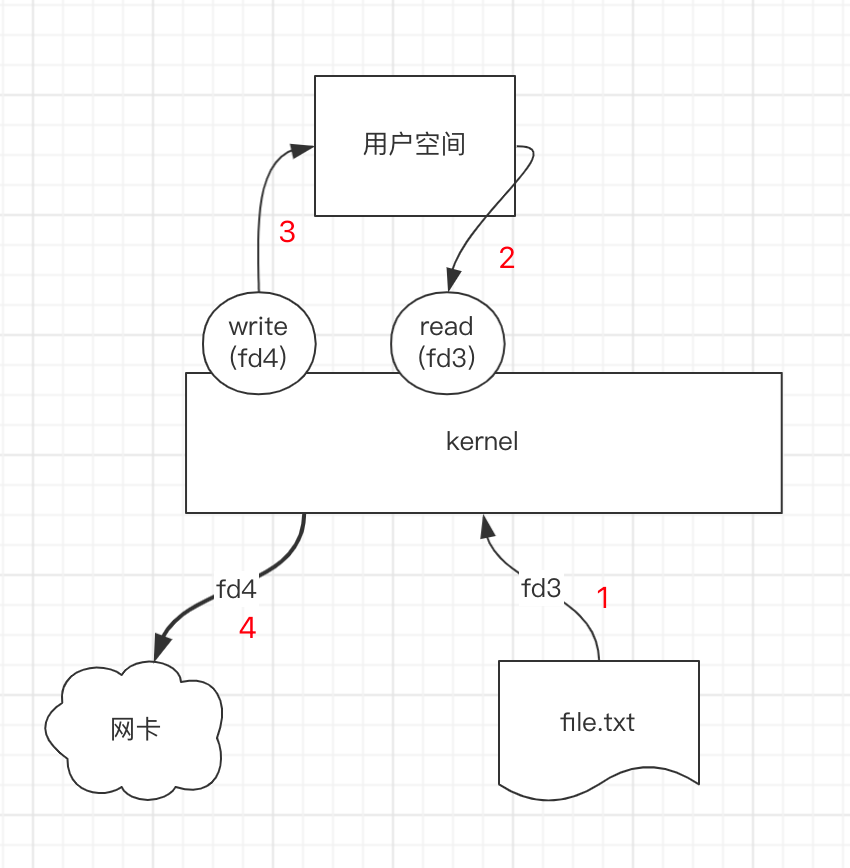
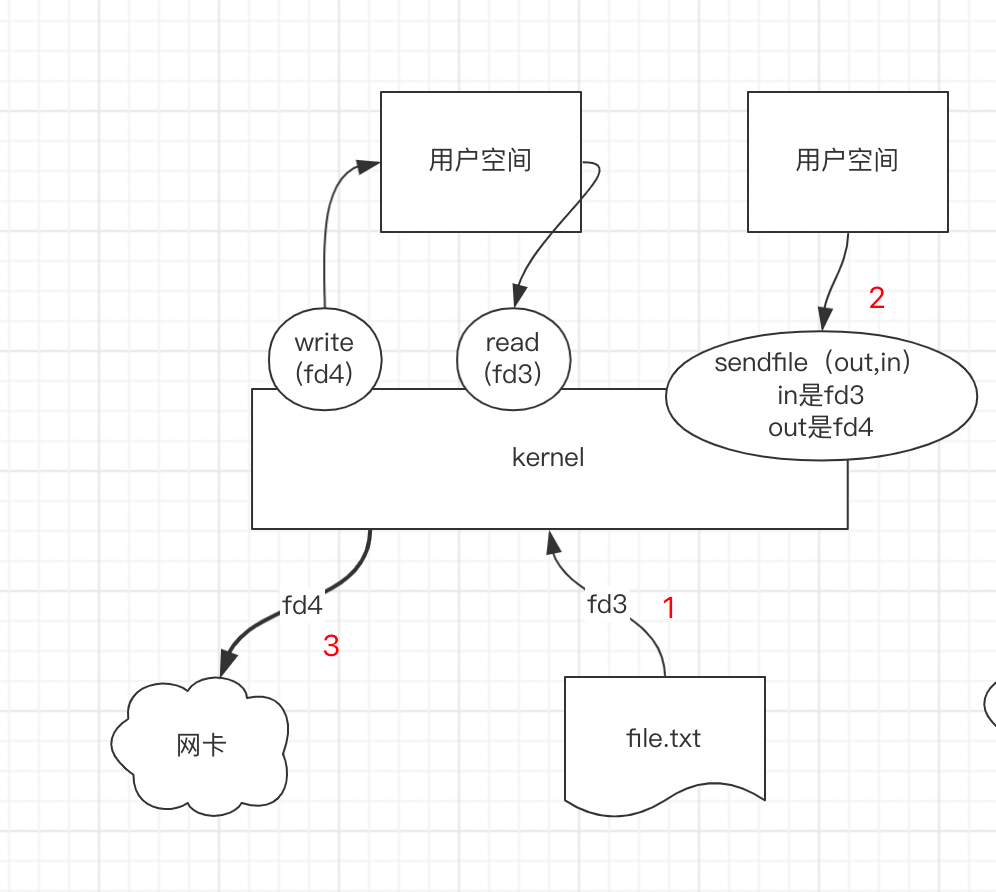
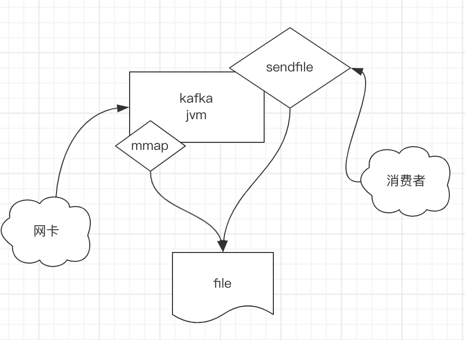

Redis诞生背景原理介绍

redis的诞生背景
在计算中，数据是存在磁盘中；而从磁盘中读取数据，一般有两个重要的指标
- 寻址：毫秒级别的；
- 带宽：单位时间可以传输多少数据，一般是数百MB或者数GB每秒
而如果数据在内存中：
- 寻址：纳秒级别的
- 带宽：GB起步，肯定比磁盘快的多
总结
- 磁盘比内存慢了十万倍（只是寻址上慢）
redis是kv结构，为啥还要给v定义五种基本类型
大数据概念：计算向数据移动。
不给 v 定义类型，是完全可以的。比如 memcache 就是没有类型的，它的 value 是二进制的数据，可以存任何类型的数据。
那么给 v 定义类型有什么好处呢？
举一个例子就明白了。
同样的我们存一个复杂结构数据，比如超长的数组，分别存到 memcache 中和 redis 中，当我们想取出这个 value 中的某一个数据的时候：
memcache的操作方法是：将 value ，也就是这个超长的数据，全部返回给客户端，由客户端在进行处理。
而redis的操作方法是：将 value 在服务端就可以进行过滤，只给 客户端 返回 客户端 想要的数据。
这就是：计算向数据移动。
redis是怎么处理大量的并发请求的
一个系统可以部署多个redis进程，但是一个redis实例是单进程单线程单实例的，那么redis是怎么处理大量的并发请求的呢？
如上图，我们的【redis:6379】是部署在【linux】服务器上的，linux有内核；
那么redis的处理流程就是：
多个client可能发起很多的请求来到linux服务器上，这些请求会交给linux操作系统处理；
然后系统会把请求交给redis的进程来处理；
这部分工作都是kernel来进行调度的
然后redis是通过调用kernel的系统调用（mmap的共享空间+epoll）来实现的，通过这种方式 多路复用+共享空间(避免拷贝) 就是redis处理快的原因。
具体什么是mmap和epoll可以看下面的解释
redis为啥要设计成单进程单线程的
为了避免并发问题。
比如不同的client在同一时刻对 同一个key 进行操作； 一个修改key，一个删除key。
必然会导致并发问题。
而redis为了处理速度，就不能引入过多的逻辑，解决并发问题的常见方式就是锁，如果引入了锁，必然会影响性能。
所以直接使用单进程，单线程的方式，就可以完美解决并发问题。
不管你是多少个线程，反正到了 redis 服务端，都是一个线程。
内核程序调用的发展历程
阻塞时期（BIO）

在Linux早期，client读取一个文件的流程是
- client 告诉 Kernel 我要读取哪一个文件；在Linux中一切皆文件，所以 client 会给 kernel 一个
fd（文件描述符） - kernel 拿到这个
fd（文件描述符）开启一个线程，通过 read（系统调用）读取指定的fd（文件描述符） - 如果此时
fd（文件描述符）并没有准备好，那么read（系统调用）所在的这个线程就会一直阻塞； - 那么此时别的线程需要读取的
fd（文件描述符）即使已经准备好了，由于有别的线程在阻塞，所以这个线程也要等着。
read（系统调用）为什么是阻塞的
- read（系统调用）底层是通过 socket 和 kernel 通信的
- socket也是一个系统调用，只不过在Linux早期阶段，socket是阻塞的。（PS：后面随着Linux的发展，socket可以被设置为：非阻塞）
在这个阶段产生的问题就是：并发很低
同步非阻塞（NIO）

在这个阶段，随着Linux的发展， socket这个系统调用，可以通过参数指定，将socket设置为：非阻塞socket；
相对于上一个 阻塞时期（BIO），同步非阻塞的时期的处理逻辑是：
- client 告诉 Kernel 我要读取哪一个文件；在Linux中一切皆文件，所以 client 会给 kernel 一个
fd（文件描述符） - kernel 拿到这个
fd（文件描述符）开启一个线程，通过 read（系统调用）读取指定的fd（文件描述符）- 由于这个时期，read（系统调用）所依赖的 socket 已经可以被设置为：非阻塞
- 所以，就不会像 BIO 阶段一样，开启多个线程了，此时只需要一个线程就可以处理，因为read（系统调用）此时已经是：非阻塞了。
- 这个线程，在 kernel 中，会一直轮训，判断 client 所需要的
fd（文件描述符）是否准备好- 如果 read 的这个
fd（文件描述符）还没有准备好，此时会直接返回false，表示还没有准备好。如果fd（文件描述符）准备好了，会直接返回fd（文件描述符）； - 轮训发生在用户空间。
- 如果 read 的这个
- 这样的话，用户空间在轮训的时候，就可以通过返回值来判断。这样就不会阻塞了
- 此时轮训的线程，还是同步线程，并不是异步。
问题：如果此时有1000个或者更多的线程read，那么在用户控件轮训1000次或者更多次，就会有很大的调用成本。那么怎么解决呢？
多路复用（NIO）

从同步非阻塞（NIO）过来之后，linux系统继续发展，要怎么解决因为轮训次数多导致的系统消耗呢？
于是kernal新增了一个系统调用，这个系统调用叫做 select，它的作用就是对一批fd（文件描述符）查询这些 fds 是否已经准备好，比如说select(1000fds),其中有800个已经准备好，那么select就会返回这800个fd
然后交给用户线程，由用户线程调用这800个fds，那么就能保证每次调用的fd都是已经准备好的了。
那么这样就没有问题了嘛？当然不是，注意这其中的调用关系

在用户空间和系统空间中；会通过select和read来回调用，注意其中的参数是fds，那么我们知道fd是在系统空间中的，用户空间想要读取和处理一个fd，就需要去系统空间中拿，拿到之后，返回到用户空间，这个过程是将系统空间中的fd复制一份到用户空间中的。那么当fd很多的时候，复制也会增加系统消耗，浪费存储空间。
多路复用共享空间（mmap）

上面说到了多路复用的场景，会出现系统空间和用户空间fd数据拷贝的问题，那么解决的办法就是：在用户空间和系统空间中间增加一个共享空间。这个共享空间通过红黑树和链表存储fd；
共享空间是通过什么系统调用来实现的？是通过mmap这个系统调用；共享空间里放了一些数据结构：红黑树，链表
一个新加入的等待查询的fd是放在红黑树中的，查询出来的fd是放在链表中的，供用户使用。
epoll是一系列系统调用的统称，包括：epoll_create;epoll_ctl;epoll_wait
整体流程就是：
用户线程/进程会调用epoll_create创建一个epoll的fd
然后当来一个查询的时候，会交给epoll的fd，然后epoll会有一个共享空间（这个共享空间就是通过mmap实现的）
比如我们要查询1000个fd，这1000个fd会通过epoll的fd写入到共享空间的红黑树中；
那么epoll的fd是怎么写入到共享空间的呢？是通过epoll中另一个系统调用：epoll_ctl
etl add：向共享空间加一个fd
etl del：从共享空间中删除一个fd
那么epoll还有一个系统调用，epoll_wait是干嘛的呢？ 它的作用是当我们要查询1000个fd的时候，这些fd通过ctl写入到共享空间中的红黑树之后，每写入一个fd，就会调用wait，然后当前fd就会阻塞等待kernal处理，kernal处理完一个，就返回一个，处理完一个，返回一个。（wait就类似于回调）
然后epoll返回fd之后，用户线程会再次调用read从共享空间中获取fd
补充：到底什么是多路复用
多路复用是指同时监控多个 IO 事件的技术，能够让单个线程或进程同时处理多个连接。
常见的多路复用技术包括 select、poll 和 epoll 等
这些技术底层实现原理不尽相同，但都能够在单个进程或线程内同时监视多个 IO 事件，以提高系统的吞吐量和响应速度。
补充：关于共享空间
- 共享空间是“共享的”
- 什么意思呢？
- 就是说用户空间可以直接看到并操作共享空间中的数据，而系统空间也可以直接看到并操作共享空间中的数据
- 这样的好处是什么呢？
- 避免了fd（文件描述符）在用户空间和系统空间中的来回复制，减少性能开销
- 注意
- 这里不是0拷贝，0拷贝的系统调用是：sendfile； 而共享空间的系统调用是：mmap
- 但是mmap和sendfile的核心思想都差不多，都是为了减少fd（文件描述符）的拷贝，提升性能
补充：0拷贝
假设这么一个场景：一个程序进程需要读取系统中的一个文件，然后通过网卡发出去
在没有0拷贝之前：1、内核读取文件，写入fd3；2、用户程序进程读取fd3；3：用户程序将读取到的内容写入fd4；4、网卡将fd4发送出去。
在没有0拷贝之前，整个过程读来写去的，很浪费性能。那么0拷贝怎么做的呢？
0拷贝就很简单了，首先说一下0拷贝的系统调用
sendfile(out,in) 表示将in写入out，因为是直接内核处理，所以不用和用户空间互相拷贝了。
整个流程就是，内核读取文件；然后用户线程通过sendfile0拷贝直接写入到fd4；网卡将fd4发出去
补充：kafka的简单实现原理
kafka的简单实现原理是分两步
生产者生产消息
kafka是接收网卡传过来的数据之后
用户进程通过mmap写入到共享空间
由于写到了共享空间，kernal就可以直接用了，kernal就可以将这些数据直接写入磁盘文件
中间因为使用了mmap系统调用，减少了数据的拷贝；
消费者消费消息
kafka的消费者是通过sendfile的0拷贝来进行消费的；
sendfile的两个参数，一个输入，一个输出；输入就是上一步写入的file，输出就是消费者消费的内容；
这样消费者使用 sendfile 也避免了数据的拷贝，提升了性能。
sendfile是一个系统调用，在没有sendfile的时候，用户进程获取一个文件是通过kernel读取文件，然后写入到用户空间，用户空间在把这个文件传给具体的程序处理；有了sendfile这个系统调用之后，可以直接讲文件传给具体的程序处理，避免了中间的拷贝；
redis的运行原理
这部分和 《redis是单进程单线程单实例的，那么redis是怎么处理大量的并发请求的呢？》有点重复了。内容都是一致的。
redis里面只有一个线程一个进程吗？ 并不是，要注意这个概念，在redis中处理用户命令的线程只有一个，但是redis本身并不是只有一个线程一个进程。

假设目前有三个client连接了redis，redis是运行在linux上的；
- client发送了redis命令进行查询或者设值，对linux来说，就是很多的socket打在了内核上
- 然后通过epoll（create,ctl,wait）和共享空间（mmap）等待（wait）redis进程(6379和6380)准备数据，这个数据对linux来说就是fd；
- 等redis准备好了，会将这些数据(或者说是fd)通知到内核（因为此时内核还在wait，等待回调呢），
- 然后内核调用read获取内容，在发送给client；
这就是整个redis的处理过程。那么redis为什么快？主要就是因为：使用了多路复用（提高性能）+共享空间（避免拷贝）保证了redis的快速处理。